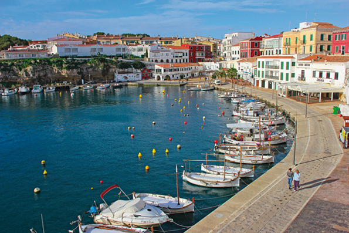

ЭС КАСТЕЙ, британское наследие
 В двух километрах от Маона находится Эс Кастей – самое восточный населенный пункт на Менорке, а следовательно, и во всей Испании. Он расположен у моря, на входе в порт Маон между бухтами Калесфонтс (Calesfonts) и Кала Корб (Cala Corb), и его население в настоящее время составляет около 8 тыс. человек. Городок родился в тени могущественной, впоследствии разрушенной крепости Сан Фелипе (Castillo de San Felipe, 1555 г.), , давшей ему название – «Эс Кастей». Посещение подземных галерей крепости позволяет оценить ее былое величие, обладать крепостью желали все крупные европейские державы XVIII века. Город был основан англичанами в 1771 г. в ходе второй британской оккупации (1763-1782 гг.). Эс Кастей или Джорджтаун, как нарекли его британцы, строился по проекту шотландского военного инженера Патрика Макейара (Patrick Mackellar, 1717-1778 гг). Планировка города отвечает британской военной модели эпохи Просвещения, основанной на однородности и следовании прямоугольной застройке того времени.
В двух километрах от Маона находится Эс Кастей – самое восточный населенный пункт на Менорке, а следовательно, и во всей Испании. Он расположен у моря, на входе в порт Маон между бухтами Калесфонтс (Calesfonts) и Кала Корб (Cala Corb), и его население в настоящее время составляет около 8 тыс. человек. Городок родился в тени могущественной, впоследствии разрушенной крепости Сан Фелипе (Castillo de San Felipe, 1555 г.), , давшей ему название – «Эс Кастей». Посещение подземных галерей крепости позволяет оценить ее былое величие, обладать крепостью желали все крупные европейские державы XVIII века. Город был основан англичанами в 1771 г. в ходе второй британской оккупации (1763-1782 гг.). Эс Кастей или Джорджтаун, как нарекли его британцы, строился по проекту шотландского военного инженера Патрика Макейара (Patrick Mackellar, 1717-1778 гг). Планировка города отвечает британской военной модели эпохи Просвещения, основанной на однородности и следовании прямоугольной застройке того времени.
В 1782 году испано – французские войска высадились на берег острова, что привело к капитуляции англичан и началу испанского владычества, закрепленного Версальским договором 1783 года. Именно тогда город меняет имя Джорджтаун на испанское «Реаль Вийя де Сан Карлос» (Real Villa de San Carlos), которое позже сократили до Вийя Карлос (Villa-Carlos), в память об испанском монархе Карлосе III. И, наконец, с 1984 г. город называют популярным среди жителей – Эс Кастей, ссылаясь на Крепость Сан Фелипе.
 Главная площадь – Эспланада (она же оружейная площадь) окружена военно-историческими зданиями, включая Мэрию (1796 г.). Казармы стратегически располагались в центре города и предназначались для проживания военных и офицеров. В прошлом эти величественные здания, окрашенные на английский манер в красноватый цвет, и сегодня продолжают впечатлять проходящих через площадь гостей города. Прямолинейная планировка Эс Кастей делает его уникальным по концепции застройки не только для Менорки, но и Испании в целом.
Главная площадь – Эспланада (она же оружейная площадь) окружена военно-историческими зданиями, включая Мэрию (1796 г.). Казармы стратегически располагались в центре города и предназначались для проживания военных и офицеров. В прошлом эти величественные здания, окрашенные на английский манер в красноватый цвет, и сегодня продолжают впечатлять проходящих через площадь гостей города. Прямолинейная планировка Эс Кастей делает его уникальным по концепции застройки не только для Менорки, но и Испании в целом.
Без сомнения, отличительным местом береговой линии Эс Кастей был и остается Калесфонтс (Calesfonts), расположенный в древнем овраге (s'Hort des Milord). Своим именем это место обязано двум водным источникам, которые били в бухте, неподалеку от мощеного подъема, ведущего в город. С незапамятных времен этот портовый залив играл важную роль, снабжая водой приходившие на наш остров суда. Следует отметить также и значение Калесфонтс в судостроительстве. Именно здесь береговые плотники построили большую часть так называемых «bots palangrers» – особых лодок, придуманных на Менорке для ярусного лова, которые затем использовались рыбаками на восточном побережье архипелага.
Следующая по значимости – бухта Кала Корб (Cala Corb), которая с момента своего появления и на протяжении XVIII века служила укрытием для заходившие в порт кораблей и была также важна как место водоснабжения британского флота. Вопреки течению времени Кала Корб по-прежнему хранит очарование прошлого, будто время замедлило свой ход. И сегодня здесь ощущается дух прошлых эпох. Облик бухты, ее пейзаж практически не изменились до последнего времени. Летом камни обрывистых утесов покрываются цветами каперсов и соседи верные традиции приходят туда искупаться, спасаясь от летнего зноя.
Какое-то время Эс Кастей был рыбацким поселком. Прогуливаясь по Калесфонтс и Кала Корб, обратите внимание на гроты, в большинстве их которых сегодня находятся рестораны, а раньше велась активная рыбацкая и около морская деятельность. Рыбаки занимались как прибрежной, так и глубоководной ловлей, славились своей отвагой и духом искателей приключений: они так далеко уходили в море за хорошим уловом, что почти достигали берегов Алжира. Бедные рыбаки Эс Кастей подвергались испытаниям сильными штормами и погодными ненастьями, многие отдали свою жизнь морской стихии, другие умерли от изнуряющей работы в попытке заработать на хлеб и выжить.
Бухта Сан Эстебан (Cala San Esteban), расположенная рядом с входом в порт Маона, вероятно, обязана своими именем появлению на Менорке мощей первомученика Святого Эстебана, доставленных пресвитером Оросио (Orosio) из Иерусалима, о чем свидетельствуют письмена епископа Северо (Severo, 418г.) – первого христианского документа на Балеарских островах. Бухта Сан Эстебан находится в зоне Бинисаида (Binissaida). Отсюда открывается прекрасный панорамный вид на гавань. С незапамятных времен в бухте Сан Эстебан происходила активная портовая жизнь – это первое место возможной швартовки после длительных переходов и укрытие от штормов. Остатки римской дороги эпохи средневековья подтверждают и сегодня важность и былой расцвет этого места. Здесь находится Форт Мальборо (Fuerte Marlborough), построенный британцами в период с 1710 по 1726 гг. Укрепление названо во славу самого талантливого английского генерала своей эпохи – Джона Черчилля (John Churchill), графа Мальборо. В настоящее время эту небольшую крепость можно посетить в сопровождении аудиовизуальной презентации на тему Менорки британского господства XVIII века.
И, говоря о католической церкви, надо вернуться к этапу, предшествующему основанию города, который родился из поселений семей военных и всегда в тени замка Сан Фелипе. При строительстве крепости, как это происходило в то время, была основана часовня (1582г.) для религиозных обрядов ее обитателей. В последствии рядом с крепостью была построена церковь Девы Марии Розы (Nuestra Señora de la Rosa), как ее называли древние обитатели, предшественница современной церкви, также предназначавшаяся для религиозных нужд солдат крепости и их семей. Нынешняя церковь, построенная в неоклассическом стиле, была заложена в 1777 г. во время второй британской оккупации и носит имя Нашей Покровительницы дел Росарио (Nuestra Señora del Rosario), святых покровителей Сан Джорджа (со стороны англичан) и Сантьяго или Сан Хайме (со стороны испанцев).